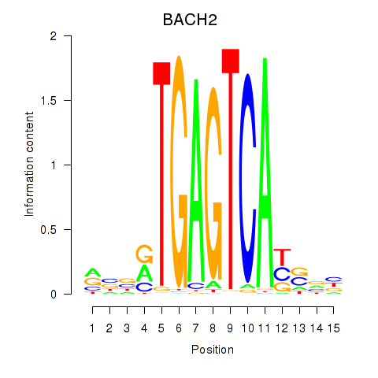

Motif ID: BACH2
Z-value: 0.692
Transcription factors associated with BACH2:
| Gene Symbol | Entrez ID | Gene Name |
|---|---|---|
| BACH2 | ENSG00000112182.10 | BACH2 |
![](http://string-db.org/api/image/network?network_flavor=evidence&limit=0&species=9606&caller_identity=MARA&identifiers=9606.ENSP00000332737%0D9606.ENSP00000452120%0D9606.ENSP00000264433%0D9606.ENSP00000326170%0D9606.ENSP00000335392%0D9606.ENSP00000370007%0D9606.ENSP00000382064%0D9606.ENSP00000352547%0D9606.ENSP00000384665%0D9606.ENSP00000341289%0D9606.ENSP00000362409%0D9606.ENSP00000229277%0D9606.ENSP00000319474%0D9606.ENSP00000261226%0D9606.ENSP00000306335%0D9606.ENSP00000466834%0D9606.ENSP00000269033%0D9606.ENSP00000161006%0D9606.ENSP00000451131%0D9606.ENSP00000309431%0D9606.ENSP00000355837%0D9606.ENSP00000381782%0D9606.ENSP00000257857%0D9606.ENSP00000306461%0D9606.ENSP00000452237%0D9606.ENSP00000332225%0D9606.ENSP00000311280%0D9606.ENSP00000263867%0D9606.ENSP00000303775%0D9606.ENSP00000256186%0D9606.ENSP00000373873%0D9606.ENSP00000337736%0D9606.ENSP00000389128%0D9606.ENSP00000354966%0D9606.ENSP00000413520%0D9606.ENSP00000260128%0D9606.ENSP00000310117%0D9606.ENSP00000324549%0D9606.ENSP00000369960%0D9606.ENSP00000295006%0D9606.ENSP00000316338%0D9606.ENSP00000320171%0D9606.ENSP00000408005%0D9606.ENSP00000354878%0D9606.ENSP00000437073%0D9606.ENSP00000351552%0D9606.ENSP00000306565%0D9606.ENSP00000342445%0D9606.ENSP00000298784%0D9606.ENSP00000309771%0D9606.ENSP00000336927%0D9606.ENSP00000377823%0D9606.ENSP00000377910%0D9606.ENSP00000391669%0D9606.ENSP00000287097%0D9606.ENSP00000341803%0D9606.ENSP00000354107%0D9606.ENSP00000401437%0D9606.ENSP00000261797%0D9606.ENSP00000306512%0D9606.ENSP00000354721%0D9606.ENSP00000255448%0D9606.ENSP00000245932%0D9606.ENSP00000345997%0D9606.ENSP00000257552%0D9606.ENSP00000465845%0D9606.ENSP00000368766%0D9606.ENSP00000262873%0D9606.ENSP00000324105%0D9606.ENSP00000251496%0D9606.ENSP00000354293%0D9606.ENSP00000285243%0D9606.ENSP00000371388%0D9606.ENSP00000455307%0D9606.ENSP00000299853%0D9606.ENSP00000349297%0D9606.ENSP00000259457%0D9606.ENSP00000367104%0D9606.ENSP00000261514%0D9606.ENSP00000381109%0D9606.ENSP00000259881%0D9606.ENSP00000406144%0D9606.ENSP00000411734%0D9606.ENSP00000259698%0D9606.ENSP00000369018%0D9606.ENSP00000306524%0D9606.ENSP00000262269%0D9606.ENSP00000472120%0D9606.ENSP00000342935%0D9606.ENSP00000358719%0D9606.ENSP00000377570%0D9606.ENSP00000374592%0D9606.ENSP00000354826%0D9606.ENSP00000406485%0D9606.ENSP00000312370%0D9606.ENSP00000309415%0D9606.ENSP00000301246%0D9606.ENSP00000324532%0D9606.ENSP00000221554%0D9606.ENSP00000325240%0D9606.ENSP00000384363)
{kind=link}
{kind=link}
{kind=link}
{kind=link}
{kind=link}
Top targets:
Gene overrepresentation in biological_process category:
| Log-likelihood per target | Total log-likelihood | Term | Description |
|---|---|---|---|
| 0.3 | 1.4 | GO:0000738 | DNA catabolic process, exonucleolytic(GO:0000738) |
| 0.1 | 1.3 | GO:0050428 | purine ribonucleoside bisphosphate biosynthetic process(GO:0034036) 3'-phosphoadenosine 5'-phosphosulfate biosynthetic process(GO:0050428) |
| 0.1 | 0.9 | GO:0033564 | anterior/posterior axon guidance(GO:0033564) |
| 0.1 | 2.1 | GO:0016540 | protein autoprocessing(GO:0016540) |
| 0.1 | 1.1 | GO:0014722 | regulation of skeletal muscle contraction by calcium ion signaling(GO:0014722) |
| 0.1 | 0.6 | GO:0000066 | mitochondrial ornithine transport(GO:0000066) |
| 0.1 | 1.1 | GO:0030388 | fructose 1,6-bisphosphate metabolic process(GO:0030388) |
| 0.1 | 0.2 | GO:1903028 | positive regulation of opsonization(GO:1903028) |
| 0.1 | 0.4 | GO:1903026 | negative regulation of RNA polymerase II regulatory region sequence-specific DNA binding(GO:1903026) |
| 0.0 | 0.1 | GO:0001983 | regulation of systemic arterial blood pressure by carotid sinus baroreceptor feedback(GO:0001978) baroreceptor response to increased systemic arterial blood pressure(GO:0001983) positive regulation of the force of heart contraction by chemical signal(GO:0003099) |
| 0.0 | 0.4 | GO:0072675 | osteoclast fusion(GO:0072675) |
| 0.0 | 0.2 | GO:0031959 | mineralocorticoid receptor signaling pathway(GO:0031959) |
| 0.0 | 0.2 | GO:1903422 | negative regulation of synaptic vesicle recycling(GO:1903422) |
| 0.0 | 0.2 | GO:2001271 | negative regulation of cysteine-type endopeptidase activity involved in execution phase of apoptosis(GO:2001271) |
| 0.0 | 0.7 | GO:1990118 | sodium ion import across plasma membrane(GO:0098719) sodium ion import into cell(GO:1990118) |
| 0.0 | 0.4 | GO:0001866 | NK T cell proliferation(GO:0001866) |
| 0.0 | 1.5 | GO:0010738 | regulation of protein kinase A signaling(GO:0010738) |
| 0.0 | 0.1 | GO:0044028 | DNA hypomethylation(GO:0044028) hypomethylation of CpG island(GO:0044029) |
| 0.0 | 0.1 | GO:0000117 | regulation of transcription involved in G2/M transition of mitotic cell cycle(GO:0000117) |
| 0.0 | 0.3 | GO:0042866 | pyruvate biosynthetic process(GO:0042866) |
| 0.0 | 0.1 | GO:1903644 | regulation of chaperone-mediated protein folding(GO:1903644) |
| 0.0 | 0.1 | GO:0042732 | D-xylose metabolic process(GO:0042732) |
| 0.0 | 0.1 | GO:0009615 | response to virus(GO:0009615) |
| 0.0 | 0.1 | GO:0014846 | esophagus smooth muscle contraction(GO:0014846) |
| 0.0 | 0.0 | GO:0090310 | negative regulation of methylation-dependent chromatin silencing(GO:0090310) |
| 0.0 | 0.1 | GO:0052214 | multi-organism catabolic process(GO:0044035) development of symbiont involved in interaction with host(GO:0044115) modulation of development of symbiont involved in interaction with host(GO:0044145) negative regulation of development of symbiont involved in interaction with host(GO:0044147) metabolism of substance in other organism involved in symbiotic interaction(GO:0052214) catabolism of substance in other organism involved in symbiotic interaction(GO:0052227) metabolism of macromolecule in other organism involved in symbiotic interaction(GO:0052229) catabolism by host of symbiont macromolecule(GO:0052360) catabolism by organism of macromolecule in other organism involved in symbiotic interaction(GO:0052361) catabolism by host of symbiont protein(GO:0052362) catabolism by organism of protein in other organism involved in symbiotic interaction(GO:0052363) catabolism by host of substance in symbiont(GO:0052364) metabolism by host of symbiont macromolecule(GO:0052416) metabolism by host of symbiont protein(GO:0052417) metabolism by organism of protein in other organism involved in symbiotic interaction(GO:0052418) metabolism by host of substance in symbiont(GO:0052419) |
| 0.0 | 0.1 | GO:1902031 | regulation of NADP metabolic process(GO:1902031) |
| 0.0 | 0.2 | GO:0070307 | lens fiber cell development(GO:0070307) |
| 0.0 | 0.1 | GO:0048388 | endosomal lumen acidification(GO:0048388) |
| 0.0 | 0.1 | GO:0046813 | receptor-mediated virion attachment to host cell(GO:0046813) |
| 0.0 | 0.1 | GO:2000286 | receptor internalization involved in canonical Wnt signaling pathway(GO:2000286) |
| 0.0 | 0.0 | GO:0036146 | cellular response to mycotoxin(GO:0036146) |
| 0.0 | 0.1 | GO:0009609 | response to symbiont(GO:0009608) response to symbiotic bacterium(GO:0009609) |
| 0.0 | 0.5 | GO:0072348 | sulfur compound transport(GO:0072348) |
| 0.0 | 1.9 | GO:0033138 | positive regulation of peptidyl-serine phosphorylation(GO:0033138) |
| 0.0 | 0.4 | GO:0061718 | NADH regeneration(GO:0006735) canonical glycolysis(GO:0061621) glucose catabolic process to pyruvate(GO:0061718) |
Gene overrepresentation in cellular_component category:
| Log-likelihood per target | Total log-likelihood | Term | Description |
|---|---|---|---|
| 0.1 | 3.3 | GO:0031143 | pseudopodium(GO:0031143) |
| 0.1 | 0.2 | GO:0002947 | tumor necrosis factor receptor superfamily complex(GO:0002947) |
| 0.1 | 0.3 | GO:1902912 | pyruvate kinase complex(GO:1902912) |
| 0.1 | 0.5 | GO:0000015 | phosphopyruvate hydratase complex(GO:0000015) |
| 0.0 | 1.1 | GO:0031307 | integral component of mitochondrial outer membrane(GO:0031307) |
| 0.0 | 0.5 | GO:0030130 | clathrin coat of trans-Golgi network vesicle(GO:0030130) |
| 0.0 | 0.2 | GO:0044294 | dendritic growth cone(GO:0044294) |
| 0.0 | 0.2 | GO:0005610 | laminin-5 complex(GO:0005610) |
| 0.0 | 0.1 | GO:0090498 | extrinsic component of Golgi membrane(GO:0090498) |
| 0.0 | 0.1 | GO:0097513 | myosin II filament(GO:0097513) |
| 0.0 | 1.2 | GO:0031430 | M band(GO:0031430) |
| 0.0 | 0.9 | GO:0044298 | neuronal cell body membrane(GO:0032809) cell body membrane(GO:0044298) |
| 0.0 | 1.4 | GO:0015030 | Cajal body(GO:0015030) |
| 0.0 | 1.6 | GO:0005871 | kinesin complex(GO:0005871) |
| 0.0 | 0.1 | GO:0044753 | amphisome(GO:0044753) |
| 0.0 | 0.1 | GO:1990796 | photoreceptor cell terminal bouton(GO:1990796) |
| 0.0 | 0.1 | GO:0032437 | cuticular plate(GO:0032437) |
| 0.0 | 0.1 | GO:1990667 | PCSK9-AnxA2 complex(GO:1990667) |
| 0.0 | 0.2 | GO:0030478 | actin cap(GO:0030478) |
Gene overrepresentation in molecular_function category:
| Log-likelihood per target | Total log-likelihood | Term | Description |
|---|---|---|---|
| 0.5 | 1.4 | GO:0008859 | exoribonuclease II activity(GO:0008859) |
| 0.3 | 2.2 | GO:0042030 | ATPase inhibitor activity(GO:0042030) |
| 0.1 | 1.1 | GO:0004332 | fructose-bisphosphate aldolase activity(GO:0004332) |
| 0.1 | 0.6 | GO:0000064 | L-ornithine transmembrane transporter activity(GO:0000064) |
| 0.1 | 1.3 | GO:0019531 | oxalate transmembrane transporter activity(GO:0019531) |
| 0.1 | 3.2 | GO:0004198 | calcium-dependent cysteine-type endopeptidase activity(GO:0004198) |
| 0.1 | 0.5 | GO:0004634 | phosphopyruvate hydratase activity(GO:0004634) |
| 0.0 | 0.1 | GO:0004937 | alpha1-adrenergic receptor activity(GO:0004937) |
| 0.0 | 0.7 | GO:0015386 | potassium:proton antiporter activity(GO:0015386) |
| 0.0 | 0.1 | GO:0004174 | electron-transferring-flavoprotein dehydrogenase activity(GO:0004174) oxidoreductase activity, acting on the CH-NH group of donors, quinone or similar compound as acceptor(GO:0016649) |
| 0.0 | 0.3 | GO:0004743 | pyruvate kinase activity(GO:0004743) |
| 0.0 | 0.9 | GO:0005225 | volume-sensitive anion channel activity(GO:0005225) |
| 0.0 | 1.3 | GO:0034237 | protein kinase A regulatory subunit binding(GO:0034237) |
| 0.0 | 0.5 | GO:0032050 | clathrin heavy chain binding(GO:0032050) |
| 0.0 | 1.2 | GO:0051371 | muscle alpha-actinin binding(GO:0051371) |
| 0.0 | 0.3 | GO:0070915 | lysophosphatidic acid receptor activity(GO:0070915) |
| 0.0 | 0.1 | GO:0017082 | mineralocorticoid receptor activity(GO:0017082) |
| 0.0 | 0.2 | GO:0000340 | RNA 7-methylguanosine cap binding(GO:0000340) |
| 0.0 | 0.5 | GO:1901682 | sulfur compound transmembrane transporter activity(GO:1901682) |
| 0.0 | 0.1 | GO:0004466 | long-chain-acyl-CoA dehydrogenase activity(GO:0004466) |
| 0.0 | 0.1 | GO:0001602 | pancreatic polypeptide receptor activity(GO:0001602) |
| 0.0 | 0.1 | GO:0004473 | malate dehydrogenase (decarboxylating) (NAD+) activity(GO:0004471) malate dehydrogenase (decarboxylating) (NADP+) activity(GO:0004473) |
| 0.0 | 0.0 | GO:0005171 | hepatocyte growth factor receptor binding(GO:0005171) |
| 0.0 | 0.1 | GO:0050119 | N-acetylglucosamine deacetylase activity(GO:0050119) |
| 0.0 | 0.1 | GO:0005143 | interleukin-12 receptor binding(GO:0005143) |
| 0.0 | 0.1 | GO:0071074 | eukaryotic initiation factor eIF2 binding(GO:0071074) |
| 0.0 | 0.1 | GO:0008449 | N-acetylglucosamine-6-sulfatase activity(GO:0008449) |
| 0.0 | 0.3 | GO:0001056 | RNA polymerase III activity(GO:0001056) |
| 0.0 | 1.6 | GO:0003777 | microtubule motor activity(GO:0003777) |
Gene overrepresentation in C2:CP category:
| Log-likelihood per target | Total log-likelihood | Term | Description |
|---|---|---|---|
| 0.0 | 0.9 | PID_NETRIN_PATHWAY | Netrin-mediated signaling events |
| 0.0 | 0.5 | PID_ARF_3PATHWAY | Arf1 pathway |
| 0.0 | 2.1 | PID_FAK_PATHWAY | Signaling events mediated by focal adhesion kinase |
Gene overrepresentation in C2:CP:REACTOME category:
| Log-likelihood per target | Total log-likelihood | Term | Description |
|---|---|---|---|
| 0.1 | 0.9 | REACTOME_ROLE_OF_DCC_IN_REGULATING_APOPTOSIS | Genes involved in Role of DCC in regulating apoptosis |
| 0.0 | 1.5 | REACTOME_GLYCOLYSIS | Genes involved in Glycolysis |
| 0.0 | 0.5 | REACTOME_GAP_JUNCTION_DEGRADATION | Genes involved in Gap junction degradation |
| 0.0 | 0.5 | REACTOME_NA_CL_DEPENDENT_NEUROTRANSMITTER_TRANSPORTERS | Genes involved in Na+/Cl- dependent neurotransmitter transporters |
| 0.0 | 1.4 | REACTOME_INTERFERON_ALPHA_BETA_SIGNALING | Genes involved in Interferon alpha/beta signaling |
| 0.0 | 0.3 | REACTOME_RNA_POL_III_CHAIN_ELONGATION | Genes involved in RNA Polymerase III Chain Elongation |